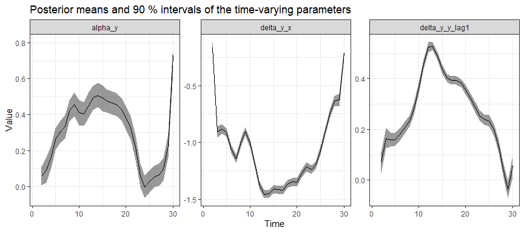
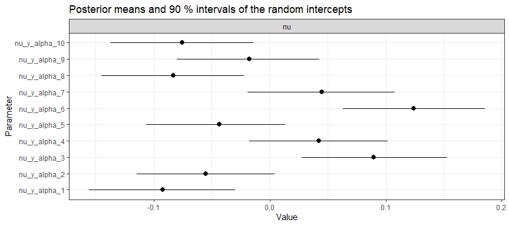
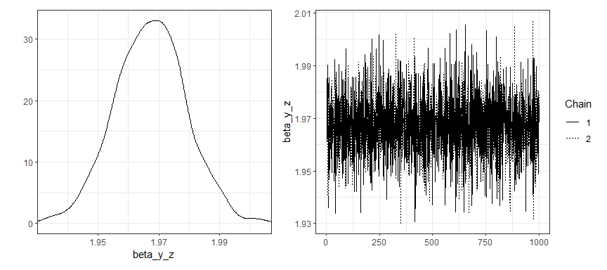
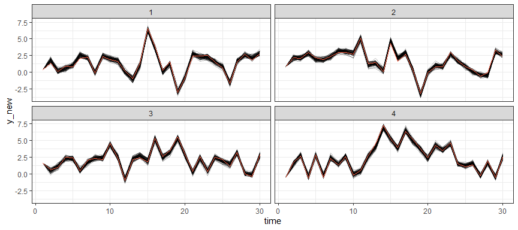
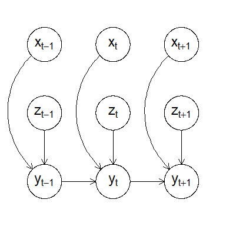

The dynamite R package provides an easy-to-use interface for Bayesian inference of complex panel (time series) data comprising of multiple measurements per multiple individuals measured in time via dynamic multivariate panel models (DMPM). The main features distinguishing the package and the underlying methodology from many other approaches are:
- Support for regular time-invariant effects, group-level random effects, and time-varying effects modeled via Bayesian P-splines.
- Joint modeling of multiple measurements per individual (multiple channels) based directly on the assumed data-generating process. Individual channels can be univariate or multivariate.
- Support for various distributions: Currently Gaussian, Multivariate Gaussian, Student t, Categorical, Ordered, Multinomial, Poisson, Bernoulli, Binomial, Negative Binomial, Gamma, Exponential, and Beta distributions are available, and these can be combined arbitrarily in multichannel models.
- Allows evaluating realistic long-term counterfactual predictions that take into account the dynamic structure of the model by efficient posterior predictive distribution simulation.
- Transparent quantification of parameter and predictive uncertainty due to a fully Bayesian approach.
- Various visualization methods including a method for drawing and producing a TikZ code of the directed acyclic graph (DAG) of the model structure.
- User-friendly and efficient R interface with state-of-the-art estimation via Stan. Both
rstanandcmdstanrbackends are supported, with both parallel chains and within-chain parallelization.
The dynamite package is developed with the support of the Research Council of Finland grant 331817 (PREDLIFE). For further information on DMPMs and the dynamite package, see the related papers:
- Helske J. and Tikka S. (2024). Estimating Causal Effects from Panel Data with Dynamic Multivariate Panel Models. Advances in Life Course Research, 60, 100617. (Journal version, SocArXiv preprint)
- Tikka S. and Helske J. (2024).
dynamite: An R Package for Dynamic Multivariate Panel Models. (arXiv preprint)
Installation
You can install the most recent stable version of dynamite from CRAN or the development version from R-universe by running one the following lines:
install.packages("dynamite")
install.packages("dynamite", repos = "https://ropensci.r-universe.dev")Example
A single-channel model with time-invariant effect of z, time-varying effect of x, lagged value of the response variable y and a group-specific random intercepts:
set.seed(1)
library("dynamite")
gaussian_example_fit <- dynamite(
obs(y ~ -1 + z + varying(~ x + lag(y)) + random(~1), family = "gaussian") +
splines(df = 20),
data = gaussian_example, time = "time", group = "id",
iter = 2000, chains = 2, cores = 2, refresh = 0
)Summary of the model:
print(gaussian_example_fit)
#> Model:
#> Family Formula
#> y gaussian y ~ -1 + z + varying(~x + lag(y)) + random(~1)
#>
#> Correlated random effects added for response(s): y
#>
#> Data: gaussian_example (Number of observations: 1450)
#> Grouping variable: id (Number of groups: 50)
#> Time index variable: time (Number of time points: 30)
#>
#> NUTS sampler diagnostics:
#>
#> No divergences, saturated max treedepths or low E-BFMIs.
#>
#> Smallest bulk-ESS: 651 (sigma_nu_y_alpha)
#> Smallest tail-ESS: 853 (sigma_nu_y_alpha)
#> Largest Rhat: 1.002 (beta_y_z)
#>
#> Elapsed time (seconds):
#> warmup sample
#> chain:1 10.157 6.377
#> chain:2 10.431 5.864
#>
#> Summary statistics of the time- and group-invariant parameters:
#> # A tibble: 6 × 10
#> variable mean median sd mad q5 q95 rhat ess_bulk ess_tail
#> <chr> <dbl> <dbl> <dbl> <dbl> <dbl> <dbl> <dbl> <dbl> <dbl>
#> 1 beta_y_z 1.97 1.97 0.0118 0.0119 1.95 1.99 1.00 3946. 1727.
#> 2 sigma_nu_y… 0.0946 0.0938 0.0116 0.0108 0.0772 0.115 1.00 651. 853.
#> 3 sigma_y 0.198 0.198 0.00371 0.00378 0.192 0.204 1.00 2734. 1459.
#> 4 tau_alpha_y 0.213 0.207 0.0481 0.0456 0.146 0.302 1.00 1797. 1634.
#> 5 tau_y_x 0.362 0.352 0.0683 0.0607 0.269 0.488 1.00 2600. 1492.
#> 6 tau_y_y_la… 0.107 0.104 0.0204 0.0193 0.0777 0.144 0.999 2118. 1899.Posterior estimates of time-varying effects:

And group-specific intercepts (for first 10 groups):
plot(gaussian_example_fit, types = "nu", groups = 1:10)
Traceplots and density plots for time-invariant parameters:
plot(gaussian_example_fit, plot_type = "trace", types = "beta")
Posterior predictive samples for the first 4 groups (using the samples based on the posterior distribution of the model parameters and observed data on the first time point):
library("ggplot2")
pred <- predict(gaussian_example_fit, n_draws = 100)
pred |>
dplyr::filter(id < 5) |>
ggplot(aes(time, y_new, group = .draw)) +
geom_line(alpha = 0.25) +
# observed values
geom_line(aes(y = y), colour = "tomato") +
facet_wrap(~id) +
theme_bw()
Visualizing the model structure as a DAG (a snapshot at time t):
plot(gaussian_example_fit, plot_type = "dag", show_covariates = TRUE)
For more examples, see the package vignettes and the blog post about dynamite.
Related packages
- The
dynamitepackage uses Stan viarstanandcmdstanr(see also https://mc-stan.org), which is a probabilistic programming language for general Bayesian modelling. - The
brmspackage also uses Stan, and can be used to fit various complex multilevel models. - Regression modeling with time-varying coefficients based on kernel smoothing and least squares estimation is available in package
tvReg. Thetvempackage provides similar functionality for gaussian, binomial and poisson responses withmgcvbackend. -
plmcontains various methods to estimate linear models for panel data, e.g., fixed effect models. -
lavaanprovides tools for structural equation modeling, and as such can be used to model various panel data models as well.
Contributing
Contributions are very welcome, see CONTRIBUTING.md for general guidelines.